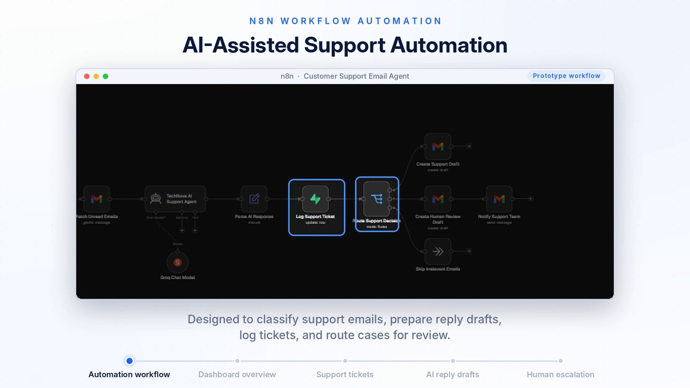
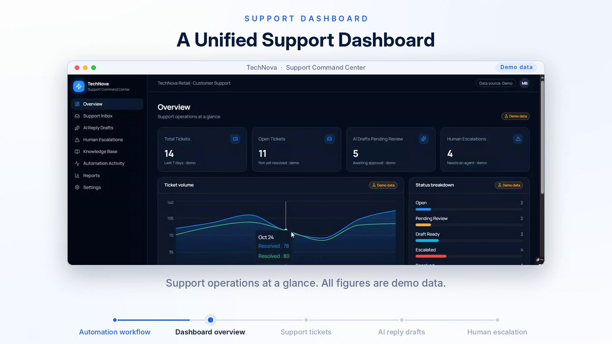
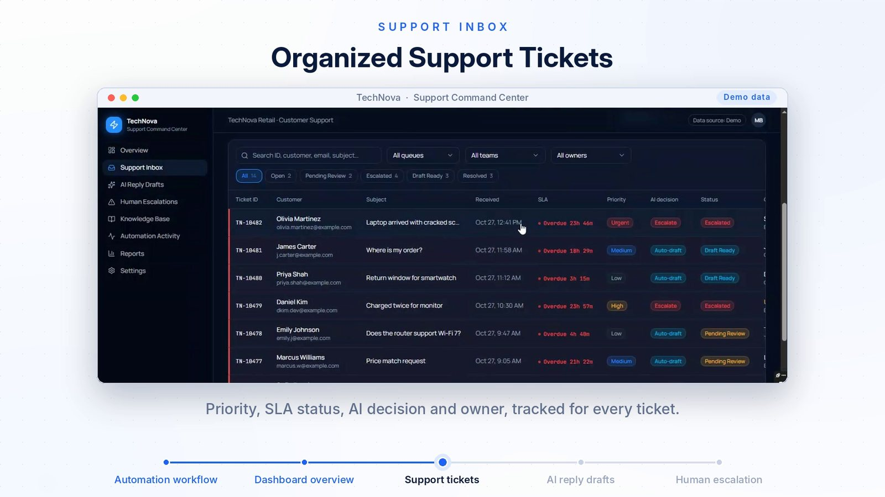
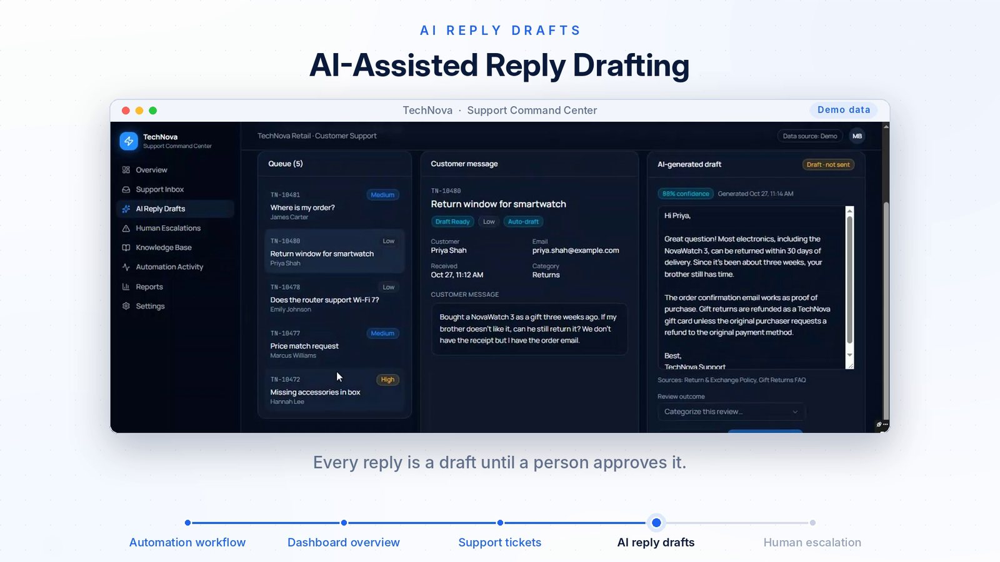
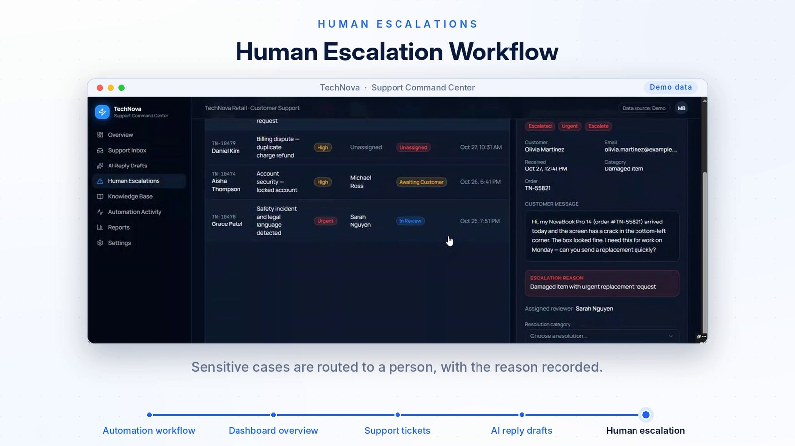

Customer support · Dashboard
TechNova Customer Support Command Center
An n8n workflow sorts support emails and prepares reply drafts. A dashboard shows tickets, AI drafts and escalations, and a person approves every reply.
The problem
A support team gets many emails every day. Someone has to read each one, decide how urgent it is, find the right policy and write a reply. Hard cases, such as damaged items or legal threats, can get lost in the same inbox.
The solution
The n8n workflow checks the support inbox and an AI agent reads each email and prepares a reply. The result is logged as a ticket. Simple cases get a draft. Sensitive cases go to a person, with the reason written down. A dashboard shows all of it in one place, and every reply stays a draft until a person approves it.
How it works
- The inbox is checkedThe workflow reads unread support emails and skips emails that are not support requests.
- An AI agent reads the emailThe agent decides what the customer needs and prepares a reply using the company's policy documents.
- A ticket is loggedThe result is saved as a ticket, and the workflow prevents duplicate tickets for the same email.
- The case is routedSimple cases get a Gmail draft. Sensitive cases create a draft for human review and notify the support team.
- A person reviews itIn the dashboard the person sees the customer message, the AI draft, the confidence and the sources, and records the outcome.
See it working





Demo data. The tickets, customers and figures in this project are sample data, and the workflow is a prototype. No real customer information is shown.
What the demo shows
- A dashboard with ticket totals, open tickets, AI drafts waiting for review and human escalations.
- A ticket inbox with priority, SLA status, the AI decision and the owner.
- An AI-written reply with its confidence and the policy sources it used, marked as a draft.
- An escalation screen that shows why a case needs a person.
A good fit for
- Online shops and retail teams
- IT help desks and service companies
- Any team with a shared support inbox
- Managers who want to see support work in one place
Want something like this for your business?
Tell me what slows your team down. I will tell you whether it can be automated and how it would work.
mujtaba078123@gmail.com · Karachi, Pakistan (UTC+5)